Términos y Condiciones de Tours Periódicos Semanales
Cualquier reserva hecha con www.tourlondres.com estará regida y sujeta a los siguientes términos y Condiciones:
» Para ofrecer la máxima calidad, contamos con un número máximo de participantes en nuestros tours, por lo que será necesario reservar la plaza a través de la sección “Contacto” de la página web o mandando un correo electrónico a contacto@tourlondres.com .
» Los precios están establecidos por persona y ruta. Los niños de hasta 13 años pueden unirse de forma gratuita a las rutas semanales siempre y cuando vayan acompañados de un adulto (Máximo de 2 niños por adulto, a partir del tercero se aplicará la tarifa general).
» Es responsabilidad del cliente comprobar la fecha, hora y el punto de partida de los tours. La hora establecida es la hora en la que el tour da comienzo por lo que se recomienda estar, al menos, diez minutos antes en el punto de encuentro acordado. Si el cliente no se presenta con puntualidad, Tour Londres se reserva el derecho a comenzar el tour sin el cliente. En tal caso, el cliente debe entender que no existirá devolución alguna por parte de la empresa.
» Tour Londres se reserva el derecho a cambiar, cancelar o alterar rutas siempre que lo considere necesario por motivos meteorológicos, seguridad o causas ajenas a la empresa. En caso de cancelación del servicio por responsabilidad directa de Tour Londres, se abonará una devolución íntegra del precio del servicio o el itinerario/servicio será sustituido por uno de igual valor.
» Si debido a causa de fuerza mayor como terremotos, nubes de polvo volcánico, condiciones meteorológicas extremas, guerras, etc. no se puede ofrecer el tour, Tour Londres no se hará responsable.
» Tanto Tour Londres como los guías autónomos que proporcionan los servicios promocionados por Tour Londres no se hacen responsables de ninguna lesión física ni pérdida o daño de objetos personales durante el recorrido, así como gastos adicionales debido a retrasos o cambios por parte del cliente.
Tour Londres Ltd no pasará información personal a terceros
Tour Londres y los guías se reservan el derecho de admisión a sus tours a cualquier persona y por cualquier motivo.
Formas de Pago
El pago se realizará en £ (Libra esterlina) en la tasa de cambio del día de su reserva y mediante transferencia bancaria.
Cancelaciones
El 100% de la cantidad abonada será devuelta en cancelaciones hasta las 12 de la noche del día previo al servicio aunque será el cliente el que soporte cualquier coste bancario en el caso de que existiera.
En caso de cancelación el propio día de los servicios o no presentarse el día en el lugar y hora de encuentro se le cobrará una tarifa de cancelación del 100% (no reembolsable).
Para realizar una cancelación de los servicios previamente confirmados deberá mandar un correo a contacto@tourlondres.com .
Cualquier reserva de Tours Semanales hecha con tourlondres.com está sujeta y regida a estos “Términos y Condiciones”. Ningún cambio en estos “Términos y Condiciones” tendrá efecto si no está puesto por escrito y con la autoridad de tourlondres.com
 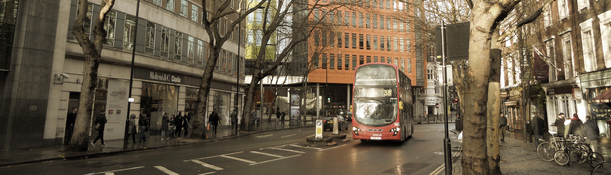
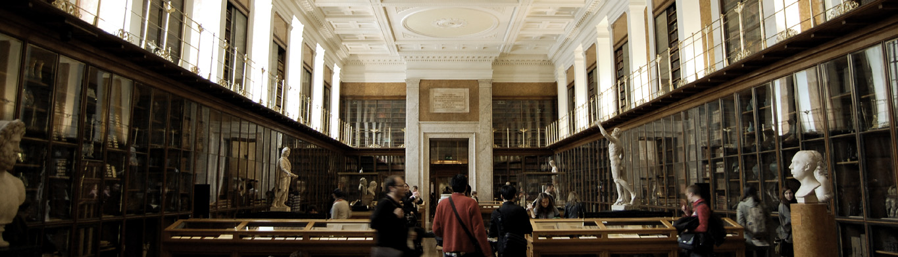
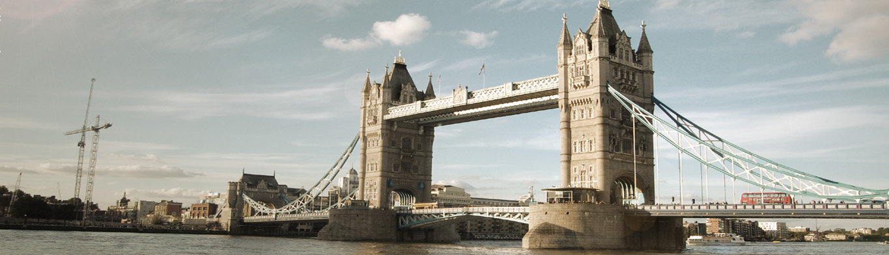
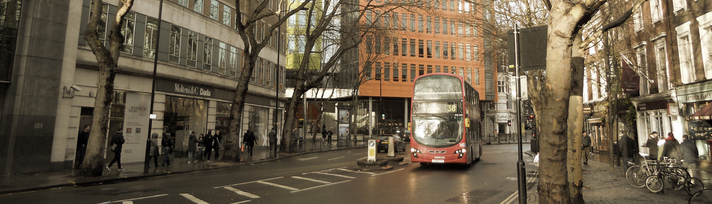
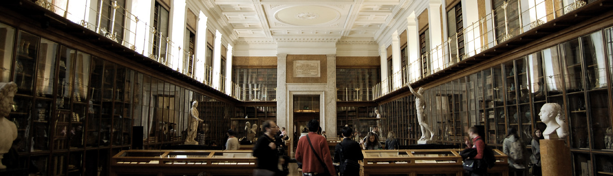
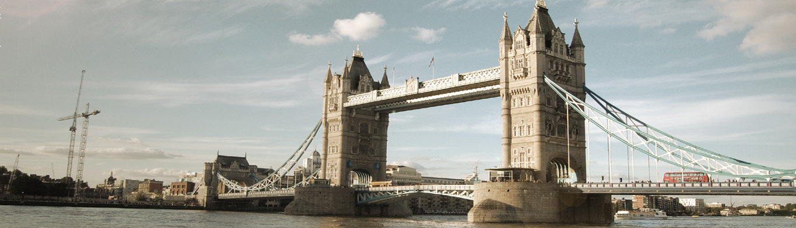
 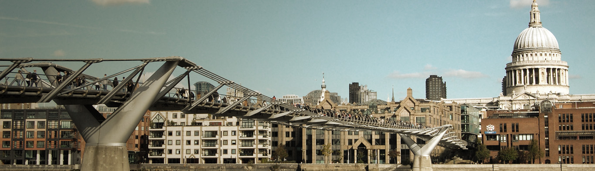
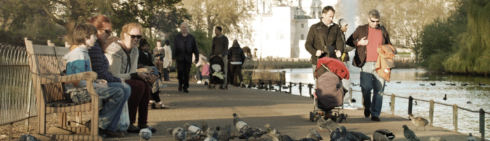
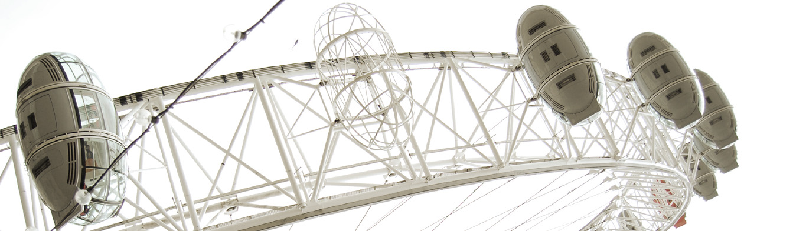
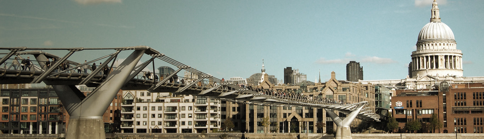
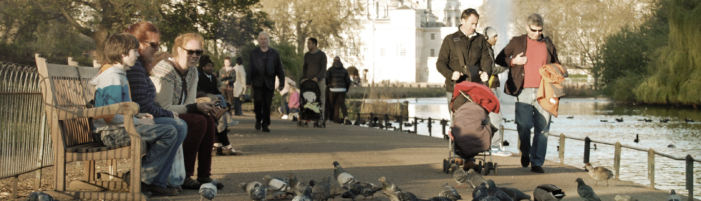
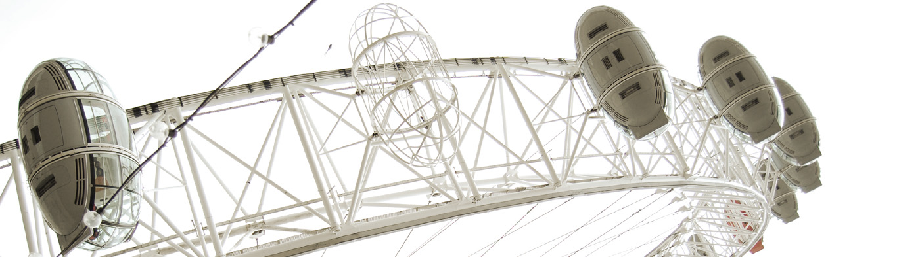